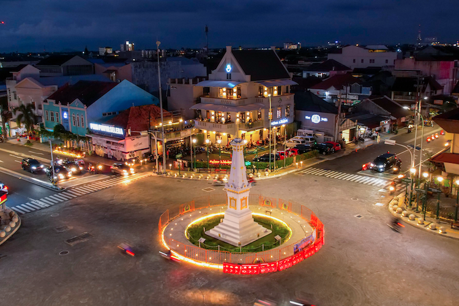
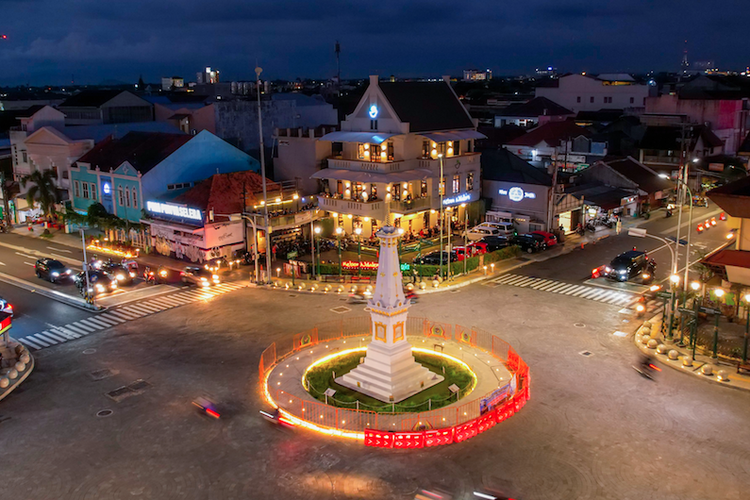

Tentang Yogyakarta
Yogyakarta, sering disebut Jogja, adalah kota yang kaya akan budaya, sejarah, dan pendidikan. Kota ini terkenal dengan candi-candi bersejarah, kuliner khas, serta keramahan warganya.
Yogyakarta, sering disebut Jogja, adalah kota yang kaya akan budaya, sejarah, dan pendidikan. Kota ini terkenal dengan candi-candi bersejarah, kuliner khas, serta keramahan warganya.
